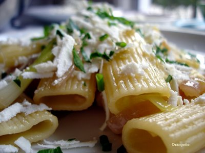

Dinner, with a garden and lilies
I feel like such a big girl. Yesterday we did a Very Adult Thing: we went to a nursery and bought plants—herbs, at that!—for our patio. It was exhilarating, and also a little sobering. Having grown up in the suburbs of central Oklahoma—where the yards are neat and well fertilized, the flower beds carefully tended, and elaborate sprinkler systems sing sweetly at 6:00 am—I tend to equate the presence of a well-tended garden with the presence of responsible, established adults. As of yesterday, I guess that would be us, sort of—except that our garden is just six or so pots on the patio.
But by god, I mean to milk those pots for all they’re worth. So last night, to celebrate our newly minted status as amateur gardeners, I trotted out a recipe tailor-made for the task: an amalgam of summery alliums and a few of our new herbs.

Rather poetically titled “Rigatoni with Five Lilies and Ricotta Salata,” the recipe had been languishing in my accordion folder, its newsprint going brittle and pale yellow, waiting patiently for the right occasion. It was the title that intrigued me, mainly, with its seeming promise of flowers unfolding amidst coils of pasta and coarse ribbons of cheese. As it turns out, the “lilies” referred to are onions, garlic, leeks, scallions, and chives—not real members of the lily family, per se, but close cousins who once occupied the same taxonomic group. A tricky turn of phrase, maybe, but I liked the idea—and anyway, the smell of slow-cooking onions and leeks is a close second, I think, to a bouquet of lilies. So with Walla Walla season now upon us, not to mention a supply of herbs just outside the door, I took it that the time, at long last, had come.

And what a time it is. He who reads this and doesn’t proceed immediately to the market—or side patio—will be sorry. It may sound like an unassuming list of ingredients, but somewhere between the five forms of onion, the pasta, and the cheese hides a lush fragrance that unfolds—not unlike a lily, I might add—under the gentle pressure of the stove’s heat. With both olive oil and butter in the pan, the kitchen smells like Italy by way of France. The sweet onions go soft and golden brown, while the leeks and scallions loosen up, shaking off their sharp edges. All together, so many alliums could make a cloying, sicky-sweet mess, but somehow, they don’t. With a gentle, tangy punch from ricotta salata and a bright spark from fresh chives and parsley, this plate is well worth its poetic name. And even better, it’s a good excuse for raiding the pots on the patio.
{kind=link}
Rigatoni with Five Lilies and Ricotta Salata
Adapted from The Babbo Cookbook and the San Francisco Chronicle
I tore this recipe out of the Chronicle a few years ago, back when The Babbo Cookbook first came out, and I’m kicking myself for not trying it earlier. If you feel any sort of affinity for either leeks or caramelized onions, do not delay: this recipe will be a keeper in your kitchen. It certainly will be in ours. To wit: between mouthfuls, Brandon said to me, “You know, your blog is really good for us. We’re such creatures of habit. If it weren’t for Orangette, we’d probably eat this every night for weeks.” I nodded, but what I really wanted to say was, “Screw the variety-for-the-sake-of-the-blog thing! I want more rigatoni.” Oh, Orangette, the sacrifices I make for you.
A final note: Brandon tried squeezing a bit of lemon over his serving, and he found it quite tasty. At his suggestion, I have included optional lemon wedges below.
To serve:
In a large (12- to 14-inch) skillet, warm the olive oil over medium heat until hot but not smoking. Add the sweet onions, and reduce the heat. Cook over medium-low, stirring occasionally, until softened and translucent; then raise the heat to medium and cook, stirring often, until deeply golden and caramelized. Remove the pan from the heat, and transfer the onions to a bowl. Set aside.
In the same skillet, heat the butter over medium heat. When it has stopped foaming and is thoroughly melted, add the garlic, leeks, red onion, and scallions, and cook, stirring regularly, until very soft and golden. Add the water, and cook until the liquid evaporates. Season lightly with salt. Remove from the heat, and stir in the sweet onions.
Bring a large pot of salted water to a boil, and cook the rigatoni until tender but al dente. In the last minute of cooking, return the onion mixture to medium-high heat. Drain the pasta, add it to the onion mixture, and toss over medium-high heat for 1 minute. Remove from the heat and toss more, if necessary, to thoroughly disperse the onions amidst the pasta. Serve immediately, topped with plenty of ricotta salata and sprinklings of parsley and chives. Salt as needed, and finish with a quick squeeze of lemon, if you like.
Yield: 4 servings